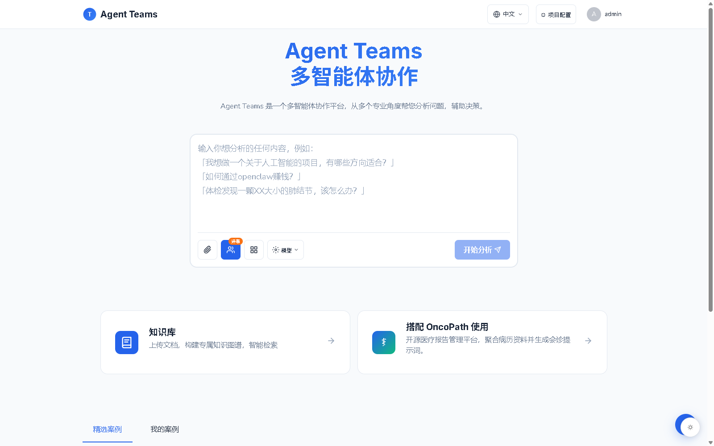
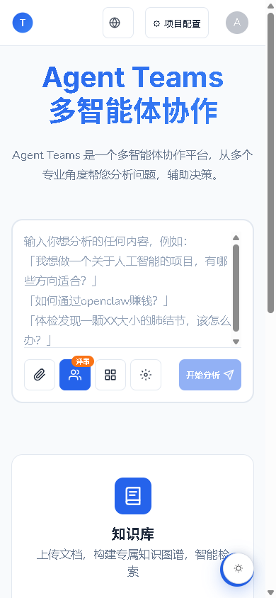
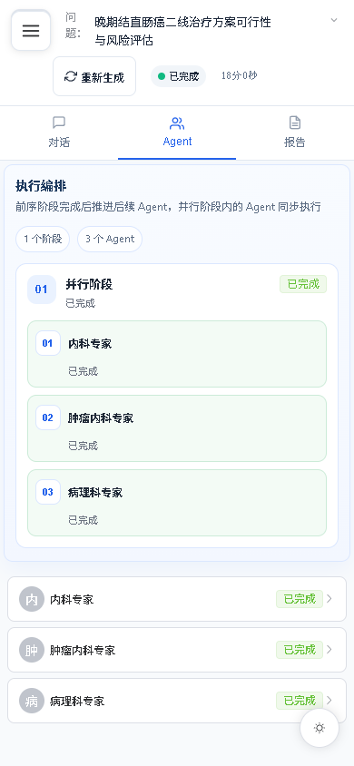
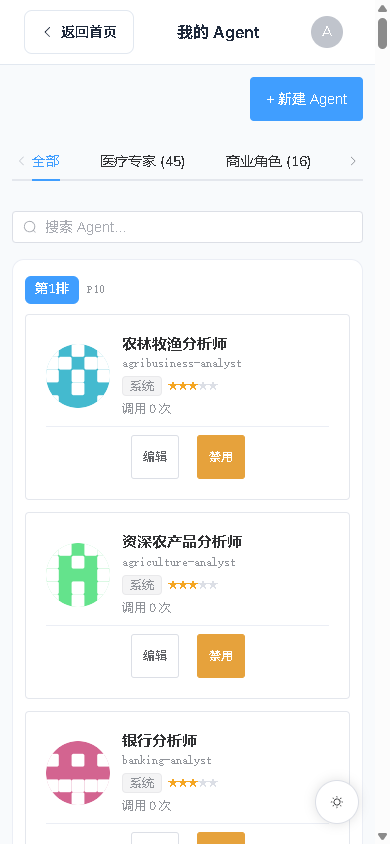
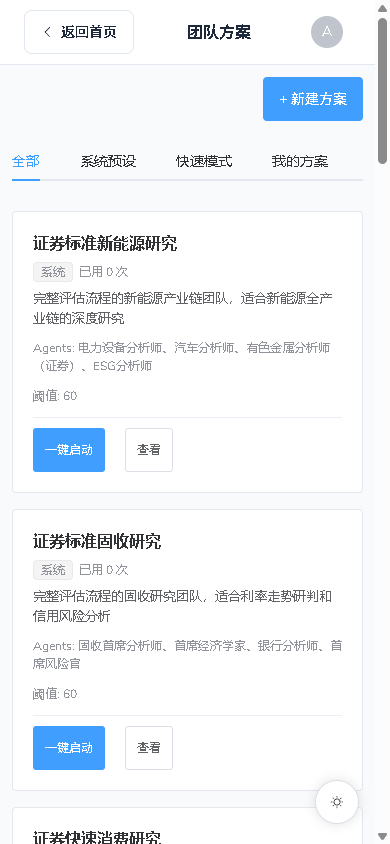

Leader 编排
需求评估、DAG 团队组建、批次执行与结果汇总由 Leader 全程自动推进，支持人工审核介入。
开源 · AGPL-3.0 自部署 · 数据自持 LangGraph 编排
把一个复杂问题交给一支AI 专家团队：需求评估、团队组建、并行执行与综合报告全自动编排。
Leader 智能编排 · 107 位领域专家 · 知识图谱 GraphRAG · SSE 实时流式
内置医疗领域 Agent 仅作信息整理与辅助理解，不构成医疗诊断或治疗建议。

从问题到结论
六个模块覆盖「理解 — 组队 — 执行 — 沉淀」的完整闭环。
需求评估、DAG 团队组建、批次执行与结果汇总由 Leader 全程自动推进，支持人工审核介入。
批次内多专家并行调用工具与知识库，执行状态实时可见，SSE 流式推送全过程。
医疗专科、商业角色、金融分析等领域专家开箱即用，也支持创建自己的专属 Agent。
D3 图谱可视化、社区发现与向量检索结合，让回答有据可依，还能定位知识缺口。
AgentPack 沉淀常用团队组合，工作流模板一键启动标准化流程，减少重复配置。
全部数据留在自己的 PostgreSQL 中，LLM 凭证以根密钥加密存储，部署位置由你决定。
真实界面 · 演示数据
所有截图均来自当前系统以演示数据运行的真实界面，覆盖从发起问题到拿到报告的完整链路。
01 / 07
在输入框描述你的问题，选择团队方案与模型，一键交给专家团队。

01 / 04
手机上同样可以发起分析、跟进执行进度与阅读综合报告。
移动端 · 同一系统
同一套部署、同一份账号，手机浏览器直接访问即可使用。窄屏自适应布局覆盖发起分析、跟进执行进度、组建专家团队与阅读综合报告的完整链路。



一次提问的旅程
你只负责提出问题；Leader 负责理解它、为它组建最合适的专家团队、盯完整个执行过程，并把所有结论汇成一份可追溯的报告。上方的界面预览展示的正是这条链路的每一步。
Leader 判断任务复杂度，必要时向你追问澄清，确定评估阈值与专家范围。
requirement_loop按优先级规则从 100+ 专家中选人，生成 DAG 执行计划，分批安排就位。
team_form_dag批次内多专家并行调用工具与知识库，SSE 实时推送思考与中间结果。
batch_executor汇总各专家结论生成结构化报告，每个观点都可下钻到对应的子任务与证据。
summarize本地掌握数据
提供 Docker Compose 一键部署，也支持源码方式本地开发。
git clone https://github.com/nickzhang1102/agentTeams.git
cd agentTeams
cp backend/.env.example backend/.env
# 编辑 backend/.env：
# SECRET_KEY / JWT_SECRET_KEY / DATABASE_URLdocker compose up -d --build包含 PostgreSQL 18、FastAPI 后端与 Nginx 前端三个服务；访问 http://localhost:8380。
默认账号 admin / admin123——首次登录后请立即修改密码；随后在后台「LLM 模型」添加一个 OpenAI 兼容服务即可开始使用。医疗场景请先阅读免责声明。
阅读医疗免责声明查看源码、提交 Issue 或改进文档——也可以搭配 OncoPath，组成「健康信息整理 + 多智能体会诊」的完整开源方案。
支持作者
如果 Agent Teams 对你有所帮助，欢迎请作者喝一杯咖啡——每一份支持都是持续维护的动力，真的很重要！

⭐ 去 GitHub 点一个 Star，同样是对作者的支持。